3 What gets computed
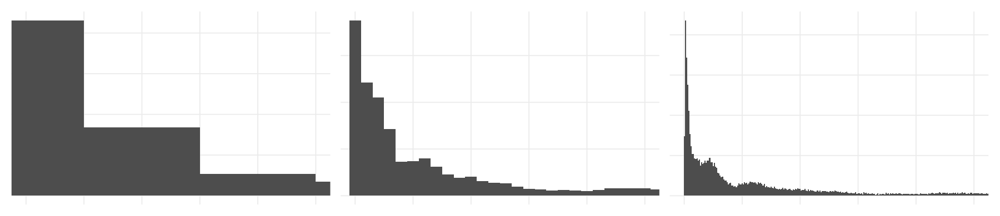
Some geoms draw exactly what you expect: geom_point(), geom_line().
Others need to do some computation! geom_histogram(), geom_density(), geom_bar(), and geom_boxplot() are all examples of this.
This chapter is what happens between your data and the vis on screen.
Overview
Duration 40 minutes
Questions
- What is a boxplot actually showing me, and what is it hiding?
- When do I want
geom_bar(), and when do I wantgeom_col()? - How do I choose a binwidth, and how do I show the raw data too?
What you need this session
- A session of RStudio open
- Something to draw on, and something to draw with
- The following packages installed
3.1 New data: Melbourne pedestrians
We are changing datasets for this chapter - looking at how people move in a city! The City of Melbourne has sensors that count how many people walk past, every hour. A year of that data ships with {naniar}:
# A tibble: 37,700 × 9
hourly_counts date_time year month month_day week_day hour
<int> <dttm> <int> <ord> <int> <ord> <int>
1 883 2016-01-01 00:00:00 2016 January 1 Friday 0
2 597 2016-01-01 01:00:00 2016 January 1 Friday 1
3 294 2016-01-01 02:00:00 2016 January 1 Friday 2
4 183 2016-01-01 03:00:00 2016 January 1 Friday 3
5 118 2016-01-01 04:00:00 2016 January 1 Friday 4
6 68 2016-01-01 05:00:00 2016 January 1 Friday 5
7 47 2016-01-01 06:00:00 2016 January 1 Friday 6
8 52 2016-01-01 07:00:00 2016 January 1 Friday 7
9 120 2016-01-01 08:00:00 2016 January 1 Friday 8
10 333 2016-01-01 09:00:00 2016 January 1 Friday 9
# ℹ 37,690 more rows
# ℹ 2 more variables: sensor_id <int>, sensor_name <chr>Each row is the number of counts of pedestrians in a one hour period, at a given sensor, for every hour of 2016. There are four sensors.
# A tibble: 4 × 1
sensor_name
<chr>
1 Bourke Street Mall (South)
2 Birrarung Marr
3 Flagstaff Station
4 Spencer St-Collins St (South)These are quite different places in Melbourne city:
- Flagstaff Station a train station
- Birrarung Marr parkland along the river
- Bourke Street Mall mostly shopping
- Spencer St-Collins St a corner in the middle of the CBD
This gives us some interesting data to play with.
3.2 Geoms that summarise for you
The idea: a geom can take all your raw numbers and hand back a few. That is useful, and it means the plot is showing you a decision somebody made, not the data itself.
Let’s start with a question:
What does a day at Flagstaff Station look like?
Flagstaff is a train station, so before we write anything, have a think about what that should look like. Here’s a snippet of one day of data for Flagstaff:
| hourly_counts | date_time | year | month | month_day | week_day | hour | sensor_id | sensor_name |
|---|---|---|---|---|---|---|---|---|
| 785 | 2016-01-01 00:00:00 | 2016 | January | 1 | Friday | 0 | 13 | Flagstaff Station |
| 313 | 2016-01-01 01:00:00 | 2016 | January | 1 | Friday | 1 | 13 | Flagstaff Station |
| 116 | 2016-01-01 02:00:00 | 2016 | January | 1 | Friday | 2 | 13 | Flagstaff Station |
| 85 | 2016-01-01 03:00:00 | 2016 | January | 1 | Friday | 3 | 13 | Flagstaff Station |
| 40 | 2016-01-01 04:00:00 | 2016 | January | 1 | Friday | 4 | 13 | Flagstaff Station |
| 38 | 2016-01-01 05:00:00 | 2016 | January | 1 | Friday | 5 | 13 | Flagstaff Station |
| 40 | 2016-01-01 06:00:00 | 2016 | January | 1 | Friday | 6 | 13 | Flagstaff Station |
| 40 | 2016-01-01 07:00:00 | 2016 | January | 1 | Friday | 7 | 13 | Flagstaff Station |
| 49 | 2016-01-01 08:00:00 | 2016 | January | 1 | Friday | 8 | 13 | Flagstaff Station |
| 67 | 2016-01-01 09:00:00 | 2016 | January | 1 | Friday | 9 | 13 | Flagstaff Station |
| 82 | 2016-01-01 10:00:00 | 2016 | January | 1 | Friday | 10 | 13 | Flagstaff Station |
| 96 | 2016-01-01 11:00:00 | 2016 | January | 1 | Friday | 11 | 13 | Flagstaff Station |
| 88 | 2016-01-01 12:00:00 | 2016 | January | 1 | Friday | 12 | 13 | Flagstaff Station |
| 103 | 2016-01-01 13:00:00 | 2016 | January | 1 | Friday | 13 | 13 | Flagstaff Station |
| 108 | 2016-01-01 14:00:00 | 2016 | January | 1 | Friday | 14 | 13 | Flagstaff Station |
| 117 | 2016-01-01 15:00:00 | 2016 | January | 1 | Friday | 15 | 13 | Flagstaff Station |
| 135 | 2016-01-01 16:00:00 | 2016 | January | 1 | Friday | 16 | 13 | Flagstaff Station |
| 164 | 2016-01-01 17:00:00 | 2016 | January | 1 | Friday | 17 | 13 | Flagstaff Station |
| 129 | 2016-01-01 18:00:00 | 2016 | January | 1 | Friday | 18 | 13 | Flagstaff Station |
| 112 | 2016-01-01 19:00:00 | 2016 | January | 1 | Friday | 19 | 13 | Flagstaff Station |
| 102 | 2016-01-01 20:00:00 | 2016 | January | 1 | Friday | 20 | 13 | Flagstaff Station |
| 95 | 2016-01-01 21:00:00 | 2016 | January | 1 | Friday | 21 | 13 | Flagstaff Station |
| 96 | 2016-01-01 22:00:00 | 2016 | January | 1 | Friday | 22 | 13 | Flagstaff Station |
| 91 | 2016-01-01 23:00:00 | 2016 | January | 1 | Friday | 23 | 13 | Flagstaff Station |
Take your pen and paper, and draw the chart you would like to see to explore:
- the number of people (hourly_counts)
- walking by over time (hour)
You don’t need exact number on the axes. I am just curious on the shape. You can use bars, dots, lines, other summaries, whatever you want!
- Now, how do you think that chart might change if we focus on:
- A given time - like 8am
- A given day - like Monday, Friday, Sunday?
How much would they vary? How would you show how they compare?
We have a reading for each hour of every day, so nearly 400 readings for each hour of the day. A geom that takes all of them and draws the spread is geom_boxplot().
Let’s look at just flagstaff:
# A tibble: 9,527 × 9
hourly_counts date_time year month month_day week_day hour
<int> <dttm> <int> <ord> <int> <ord> <int>
1 785 2016-01-01 00:00:00 2016 January 1 Friday 0
2 313 2016-01-01 01:00:00 2016 January 1 Friday 1
3 116 2016-01-01 02:00:00 2016 January 1 Friday 2
4 85 2016-01-01 03:00:00 2016 January 1 Friday 3
5 40 2016-01-01 04:00:00 2016 January 1 Friday 4
6 38 2016-01-01 05:00:00 2016 January 1 Friday 5
7 40 2016-01-01 06:00:00 2016 January 1 Friday 6
8 40 2016-01-01 07:00:00 2016 January 1 Friday 7
9 49 2016-01-01 08:00:00 2016 January 1 Friday 8
10 67 2016-01-01 09:00:00 2016 January 1 Friday 9
# ℹ 9,517 more rows
# ℹ 2 more variables: sensor_id <int>, sensor_name <chr>And plot it as a boxplot
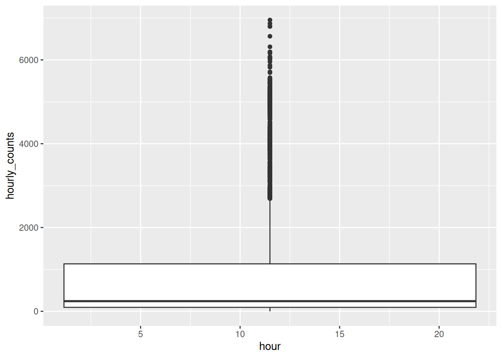
Hmmm - we get a single box - this isn’t what we want.
We saw something similar earlier - in Chapter 2, geom_line() sawtoothed across the whole plot, because it did not know species was a thing. We even get a few (!) warnings from ggplot2:
Warning messages:
1: Orientation is not uniquely specified when both the x and y aesthetics are continuous. Picking default
orientation 'x'.
2: Continuous x aesthetic
ℹ did you forget `aes(group = ...)`?
3: Removed 1 row containing non-finite outside the scale range (`stat_boxplot()`).The one we are interested in here is:
2: Continuous x aesthetic
ℹ did you forget `aes(group = ...)`? hour is a number, so ggplot2 treated it as continuous - not something that is a whole number/integer. To get ggplot to treat it as a group, use group:
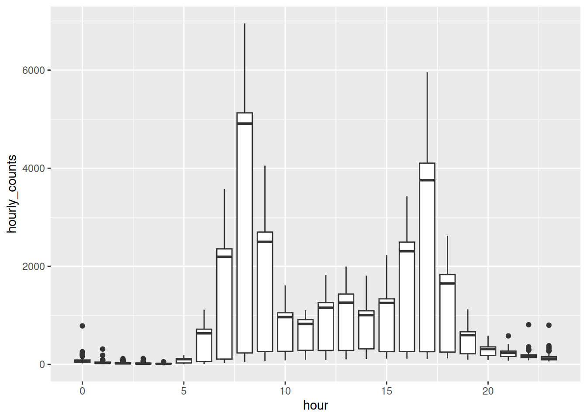
How does this compare to your drawing.
The commuter shape is there, with a peak at 8am and another around 5pm. But the thing I want you to notice is the 8am box - it has a big range!
What did it compute?
A boxplot is five numbers, worked out for you from the raw data. We typically call this the “five number summary”: min, quartile 1 (25%), median, quartile 3 (75%), max.
The boxplot is John Tukey’s, from his 1977 book Exploratory Data Analysis, and it was designed to be drawn by hand, quickly, on paper. That is why it is five numbers and not fifty: five is what you can work out and draw in a minute.
Tukey called the box edges hinges rather than quartiles. They are almost the same thing and not quite, which is why ?geom_boxplot and boxplot.stats both hedge slightly about how the box is computed.
He is also the reason we say “bit” and “software”. He coined both.
flagstaff_8am <- flagstaff |>
filter(hour == 8)
flagstaff_8am |>
summarise(
min = min(hourly_counts, na.rm = TRUE),
q1 = quantile(hourly_counts, 0.25, na.rm = TRUE),
median = median(hourly_counts, na.rm = TRUE),
q3 = quantile(hourly_counts, 0.75, na.rm = TRUE),
max = max(hourly_counts, na.rm = TRUE)
)# A tibble: 1 × 5
min q1 median q3 max
<int> <dbl> <int> <dbl> <int>
1 48 233 4910 5128 6952Those are the parts of the box: the line is the median, the box edges are the quartiles, and the whiskers reach out to 1.5x the interquartile range (IQR) - which is quartile 1 - 3. Things beyond the whiskers are classed as outliers.
Boxplots have more calculation options than you might realise. You can change how the box width is computed, and how outliers are decided.
If you want to read more, look up ?geom_boxplot() and boxplot.stats.
So, geom_boxplot() does some computation, to return these summaries, and then draw them. So why is the 8am box so wide? The median is 4910 but the lower quartile is 233, which means at least a quarter of the mornings had almost nobody there.
Why do you think there is so much variation across 8am? How can it be so busy, and so quiet, at 8am?
How would you go about exploring this?
Would you plot something? Would you do some data summarising?
What would you look at?
How would you plot it? What do you expect?
Let’s take a couple of minutes to explore this, draw some sketches, imagine the types of data summary we might see as tables, as plots!
Let’s explore this by looking at each weekday:
# A tibble: 7 × 2
week_day median_count
<ord> <dbl>
1 Sunday 128
2 Monday 5106
3 Tuesday 5091
4 Wednesday 5162.
5 Thursday 4988.
6 Friday 4847
7 Saturday 228.Nobody catches a train to work on a weekend, and the boxplot summarised across every day at once - so it generalised across both.
We come back to this properly in Chapter 5. For now, notice that the computation was correct, even if the the answer was a little misleading.
library(dplyr)
library(ggplot2)
library(naniar)
flagstaff <- pedestrian |>
filter(sensor_name == "Flagstaff Station")
flagstaff_january <- flagstaff |>
filter(
month == "January"
)
flagstaff_january_1 <- flagstaff_january |>
filter(
month_day == 1
)
flagstaff_january_1 |>
knitr::kable()
flagstaff_8am <- flagstaff |>
filter(hour == 8)
flagstaff_8am |>
summarise(
min = min(hourly_counts, na.rm = TRUE),
q1 = quantile(hourly_counts, 0.25, na.rm = TRUE),
median = median(hourly_counts, na.rm = TRUE),
q3 = quantile(hourly_counts, 0.75, na.rm = TRUE),
max = max(hourly_counts, na.rm = TRUE)
)Here is the plot again, so you have something to change:
Swap
group = hourforx = factor(hour). Do you get the same plot? Which version do you prefer, and what changed on the x axis?Which other hours have suspiciously tall boxes? Can you explain them?
We worked out that 8am is really two mornings. Draw it as two boxes - complete the code below:
Is that a fairer picture of 8am than the one box was?
Only open this if you have actually had a go.
1. Same boxes. The difference is the x axis: group = hour keeps it a number, so the boxes sit at 0, 1, 2 and the spacing is real. factor(hour) makes it a category, so they are evenly spaced and every hour gets a label. For hours I prefer group, because the axis still means something.
2. The four widest boxes are hours 8, 17, 9 and 7, which is the morning and evening commute. Those are the hours where weekday and weekend differ most, so those are the hours where one box is hiding two populations.
3. Much fairer. Two boxes, each describing a kind of morning that actually happens.
Boxplots are a really useful tool for exploring variation. Sometimes the wider variation can have distinct and interesting summaries.
Takeaways
A boxplot turns however many numbers you have into five, and draws those.
That is a good trade when the data has one lump in it. When it has two, the five numbers describe a middle that nothing is near.
3.3 Geoms that count for you
The idea: some geoms draw the number you give them. Others work a number out for you. If you do not know which kind you have, you will get a plot of something you did not ask for.
The boxplot kept all the variation. Sometimes you just want one number per hour, and you want to say which number.
The number of people is in hourly_counts, but there’s one row per day per hour, and I want one number per hour. So I summarise first.
Data summarising is an important skill, so let’s take a minute to sketch out what the data summary would look like.
library(dplyr)
library(ggplot2)
library(naniar)
flagstaff <- pedestrian |>
filter(sensor_name == "Flagstaff Station")
flagstaff_january <- flagstaff |>
filter(
month == "January"
)
flagstaff_january_1 <- flagstaff_january |>
filter(
month_day == 1
)
flagstaff_january_1 |>
knitr::kable()
flagstaff_hourly <- flagstaff |>
group_by(hour) |>
summarise(mean_count = mean(hourly_counts, na.rm = TRUE))
flagstaff_hourlySketch out the data as a table for the summary we want - which is:
- One row per hour
- Each hour has the mean number of counts in that hour
Sketch it out!
It should look something like the following:
# A tibble: 24 × 2
hour mean_count
<int> <dbl>
1 0 71.1
2 1 36.5
3 2 23.6
4 3 19.4
5 4 13.9
6 5 84.7
7 6 479.
8 7 1578.
9 8 3464.
10 9 1829.
# ℹ 14 more rowsTwenty four rows: one row per hour, and a summary.
That is exactly what geom_col() wants. You give it an x and a y, and it draws a bar that tall.
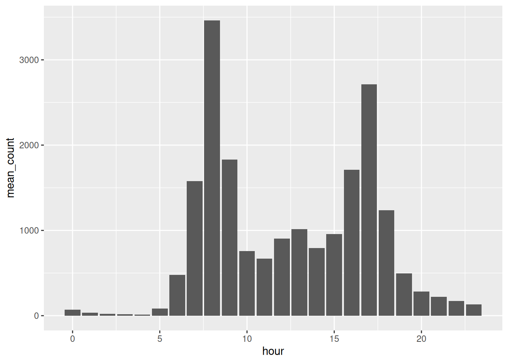
A spike at 8am, another at 5pm, almost nobody overnight.
It is only describing a single number - not the variation.
This doesn’t make geom_col() wrong! You’ve displayed a summary.
geom_bar() do?
There are two bar geoms, and the other one is geom_bar().
The difference is that geom_col() needs you to give it a y, and geom_bar() works one out for itself. What it works out is a count of rows.
Watch what happens if I use it on the raw data.
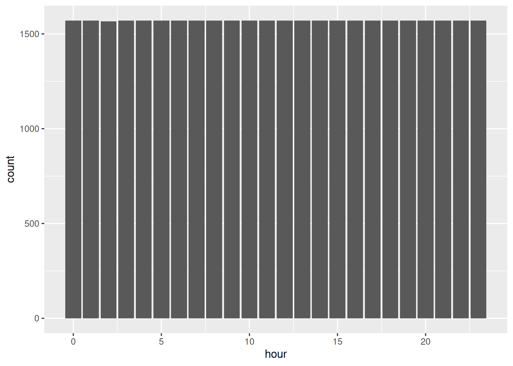
Every hour of the day is equally busy, and Melbourne at 3am is as busy as Melbourne at 5pm. Strange?
geom_bar() doesn’t take a y value, instead it counts how many rows landed in each value of hour, which is this:
# A tibble: 24 × 2
hour n
<int> <int>
1 0 1571
2 1 1571
3 2 1567
4 3 1571
5 4 1571
6 5 1571
7 6 1571
8 7 1571
9 8 1571
10 9 1571
# ℹ 14 more rowsAbout 1570 every hour. The plot is drawing my data collection, not my pedestrians - I haven’t given it the right info.
So geom_bar() is just count() and then geom_col(), glued together. These two are the same plot:
That can be a useful thing to do, when rows are the thing you want counted. This would be a useful thing to go to if each row were one person walking past a sensor. Instead, each row here is an hour of recording, so counting rows tells me about the sensor rather than the street.
So the two of them, side by side:
geom_col()uses the number you already have.
geom_bar()counts your rows for you, the same waycount()does.
Rather than memorising that, I’d ask a question about your data instead:
Have I already worked out the number I want on the y axis?
If yes, geom_col(). If no, and rows are the thing you want counted, geom_bar().
library(dplyr)
library(ggplot2)
library(naniar)
flagstaff <- pedestrian |>
filter(sensor_name == "Flagstaff Station")
flagstaff_january <- flagstaff |>
filter(
month == "January"
)
flagstaff_january_1 <- flagstaff_january |>
filter(
month_day == 1
)
flagstaff_january_1 |>
knitr::kable()
flagstaff_hourly <- flagstaff |>
group_by(hour) |>
summarise(mean_count = mean(hourly_counts, na.rm = TRUE))
flagstaff_hourlyBefore you run anything, sketch what you think Birrarung Marr looks like across the day. It’s parkland by the river. Where do you think the peak is?
Now build it. Fill in the blanks:
How close was your sketch?
Draw the park as a boxplot too, the same way we did for Flagstaff. Does the park have an 8am problem like the station did, or is the mean a fair summary here?
Now swap
geom_col()forgeom_bar()onbirrarung_hourly. You should get an error. Read it, and see whether you can explain it from whatgeom_bar()is trying to do.What happens if you drop the
na.rm = TRUEfrom themean()?
Only open this if you have actually had a go.
2. The park peaks at 5pm, not 8am. People walk by the river after work, not on the way to it.
3. No 8am problem. A park does not care what day it is, so the mean is a fairer summary here than it was at Flagstaff.
4. You get Problem while computing stat. geom_bar() wants to count rows and work out y itself, and you have already given it a y. It cannot do both.
5. Every hour comes back NA, all 24 of them. One missing reading anywhere in an hour is enough to poison the whole mean.
Takeaways
geom_col() draws the number you give it. geom_bar() counts your rows and draws that.
So the question is not “which function is right”, it is have I already worked out the number I want on the y axis?
3.4 Geoms that bin for you
The idea: a histogram chops a continuous variable into bins and counts what lands in each. The bin width is your choice, and it decides what shape you see.
We are about to look at the spread of hourly_counts across all four sensors. Every hour of 2016, at four places, as one distribution.
Draw the shape you expect:
Number of people in an hour
How often that happens
Is it symmetric, or lopsided?
is the tall part on the left or the right?
Let’s look at the spread of hourly_counts across all four sensors, using geom_histogram()
`stat_bin()` using `bins = 30`. Pick better value `binwidth`.Warning: Removed 2548 rows containing non-finite outside the scale range
(`stat_bin()`).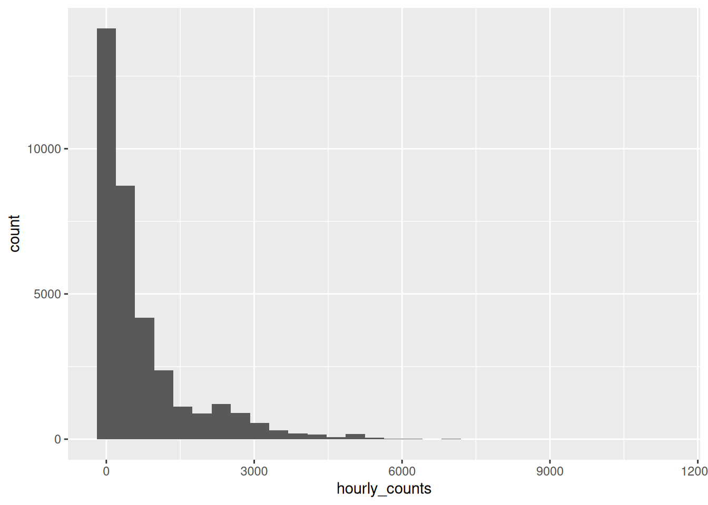
Two messages came out with that plot, let’s read them:
`stat_bin()` using `bins = 30`. Pick better value `binwidth`.ggplot2 picked 30 bins because it had to pick something, and it is telling you that 30 was not a considered choice. It’s a placeholder, and it would like you to replace it.
The second is our old friend from Chapter 1:
Removed 2548 rows containing non-finite outside the scale rangeThere are 2548 hours where the sensor recorded nothing. We come back to those in Chapter 5.
So is 30 bins any good here? With a range of 0 to 11273, thirty bins makes each one about 389 people wide, and the first bin alone holds 40% of the data.
So most of the picture ends up as one bar.
Let’s try some other widths.
At 1000 you get the shape and nothing else. At 10 you get every wobble and no shape. At 100 I can see both, so that’s the one I would keep.
How do you choose? It depends! You should explore
The question I find useful is what is a meaningful unit here? A binwidth of 100 people an hour is a number I can describe to somebody. A binwidth of 388.7 is not a number anybody chose.
Back to that 8am box
Now we’ve got a tool that can answer the question the boxplot raised.
The 8am box ran from 233 to 5128, and I said that meant 8am was not one thing. A histogram of just those mornings should show us what it actually is.
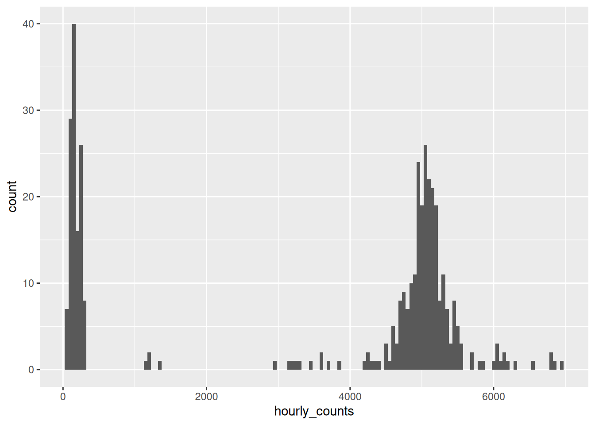
There are the two types of mornings.
One hump down near zero, one hump up around 5000, and almost nothing in between.
The boxplot couldn’t show you this. A histogram (with good bin size!) has as many humps as the data has, and here the data has two.
Showing the actual readings with geom_rug()
A histogram is still a summary, though. Those bars are counts of things, not the things themselves.
geom_rug() draws a small tick for every single observation, along the axis. So you can put the summary and the raw data on the same plot, which I think is lovely.
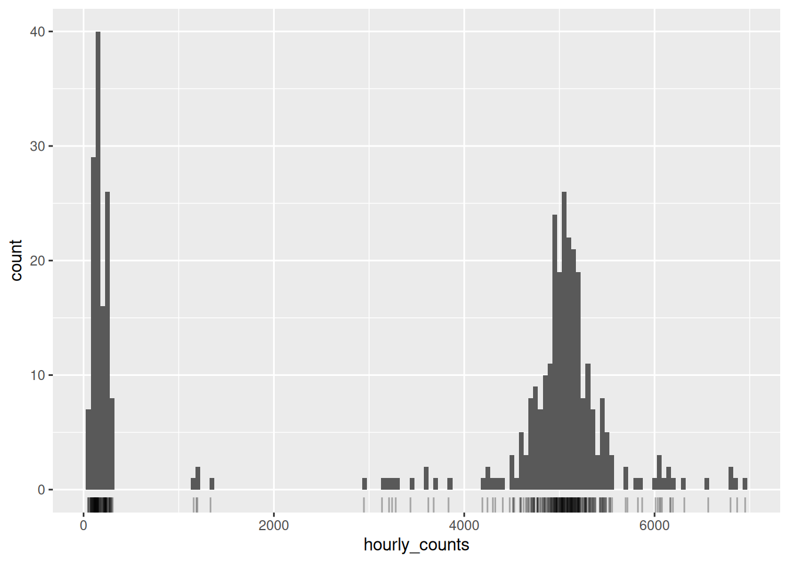
Look along the bottom. Each tick is one morning in 2016, and you can see them bunch under the two humps and thin out to nearly nothing across the middle.
I like geom_rug() a lot for this - because it costs you one line and it puts the evidence next to the summary.
The other thing you often want is two distributions side by side. Let’s take the station and the park.
The obvious move is to map the sensor onto fill, and make them transparent so we can see through one to the other.
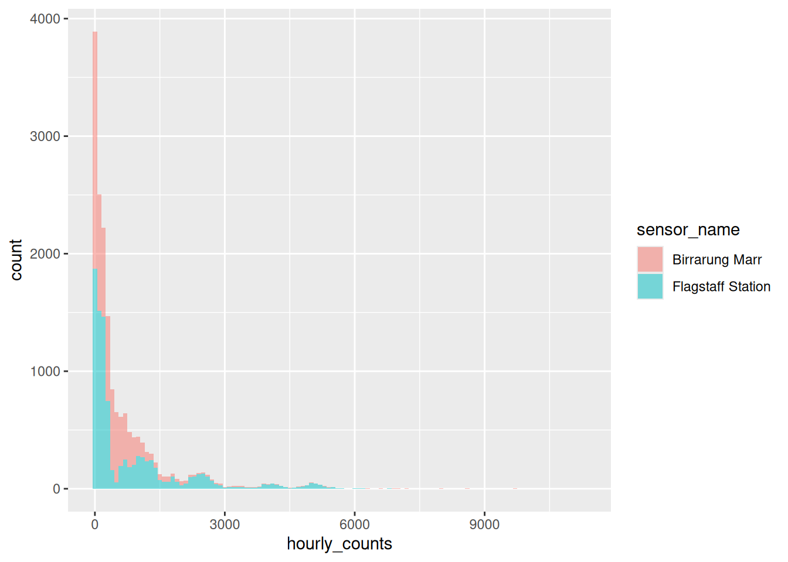
That’s not two overlapping distributions - the are stacked on top of each other.
alpha made them see-through, but see-through was never the problem. The problem is position. By default geom_histogram() stacks, so the second sensor’s bars start where the first sensor’s bars finish.
What we want is for both to start at zero, and that is position = "identity".
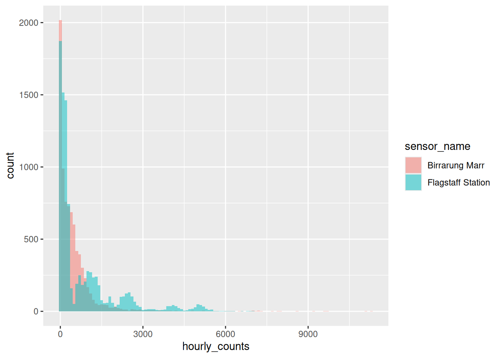
Now you can read it. Birrarung Marr sits low and tight, because a park is quietly busy most of the time. Flagstaff has a long tail out to the right, because a train station is empty at 3am and enormous at 8am.
If the overlap still bothers you, geom_density() does a related computation and draws a smooth curve instead of bars. I like to pair geom_density() with geom_rug():
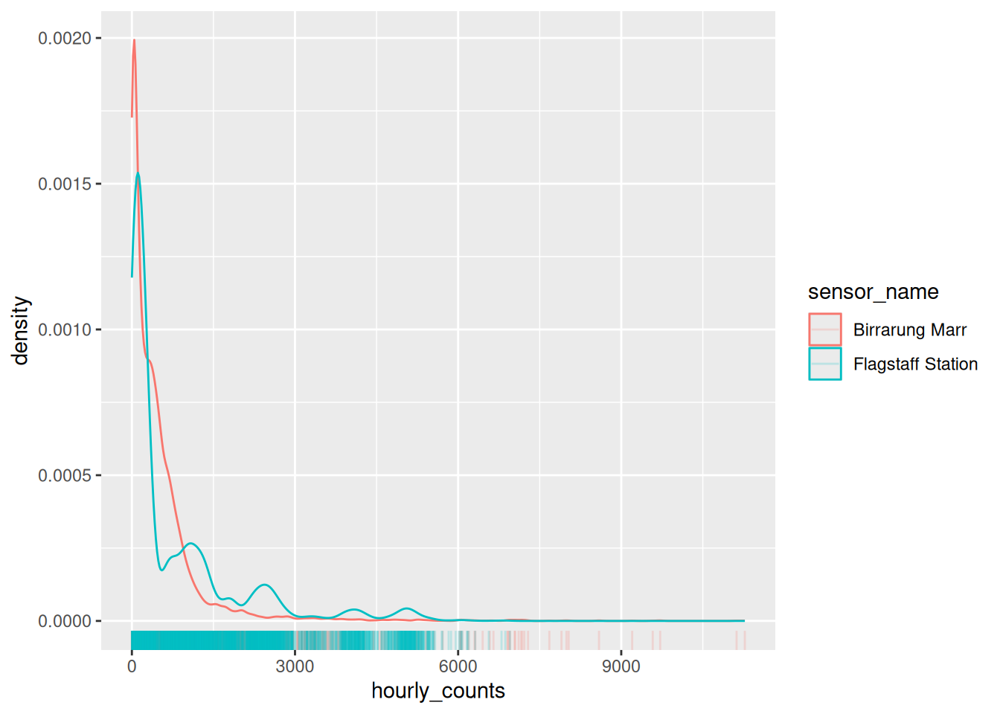
Be careful with density curves, though. That y axis is no longer a count of anything. It is a density, chosen so the area under each curve is one, which is what lets you compare two groups of different sizes.
library(dplyr)
library(ggplot2)
library(naniar)
flagstaff <- pedestrian |>
filter(sensor_name == "Flagstaff Station")
flagstaff_january <- flagstaff |>
filter(
month == "January"
)
flagstaff_january_1 <- flagstaff_january |>
filter(
month_day == 1
)
flagstaff_january_1 |>
knitr::kable()
flagstaff_8am <- flagstaff |>
filter(hour == 8)
flagstaff_8am |>
summarise(
min = min(hourly_counts, na.rm = TRUE),
q1 = quantile(hourly_counts, 0.25, na.rm = TRUE),
median = median(hourly_counts, na.rm = TRUE),
q3 = quantile(hourly_counts, 0.75, na.rm = TRUE),
max = max(hourly_counts, na.rm = TRUE)
)Draw the 8am histogram for Birrarung Marr before you build it. One hump or two? A park doesn’t much care what day it is, so what should that mean?
Now build it, with a rug:
Were you right? Try a couple of other binwidths while you are there.
Go back to
flagstaff_8amand trybinwidth = 2000. What happens to the two humps, and what would you have concluded if you had only ever seen that version?geom_histogram()bins for you.geom_freqpoly()does the same computation and draws a line instead. Swap one for the other onflagstaff_8am.
Only open this if you have actually had a go.
1 and 2. One hump. Birrarung Marr at 8am runs from 95 to 7218 with no gap in the middle, because a park does not care what day it is. No commute means no second population.
3. At binwidth = 2000 you get four bars, and the two humps merge into one. You would conclude 8am at Flagstaff is a single busy-ish morning, which is exactly backwards.
4. Same computation, different mark. geom_freqpoly() is easier to overlay two of, and harder to read a single count off.
Takeaways
The default binwidth is a placeholder, and ggplot2 says so out loud. Pick a number you could describe to somebody.
A histogram is still a summary, so put a geom_rug() under it when there are few enough points to see them.
The histograms in this chapter were deliberately plain, so the computation was the only thing to look at. Here is one dressed for showing somebody.
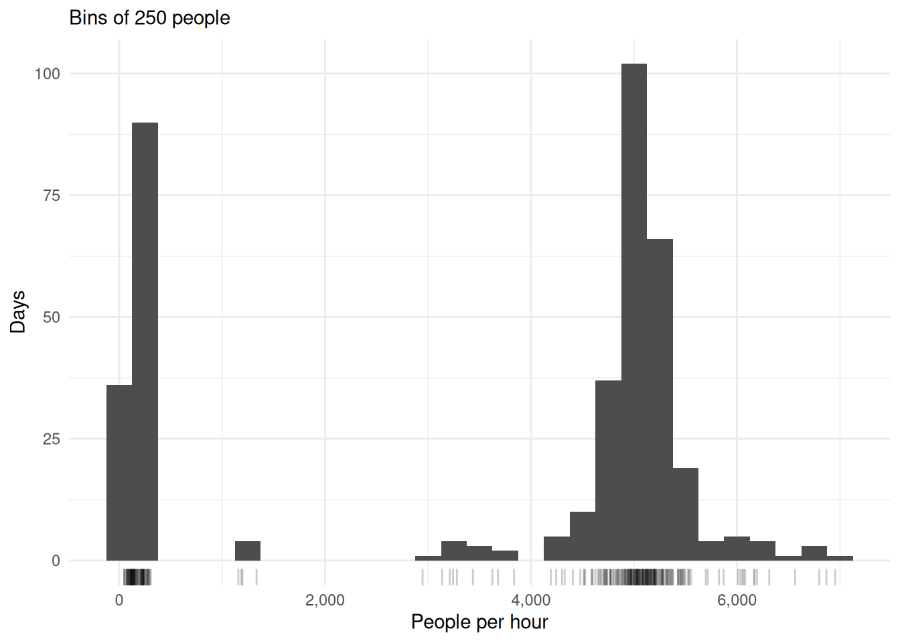
- State the binwidth. The reader is looking at a computation, and the subtitle is the cheapest place to say which one.
geom_rug()puts the actual observations under the summary, so the bins can be checked against something.scales::label_comma()on any axis with thousands on it.4000and4,000are not the same reading effort.
3.5 To summarise
Three things to take out of this chapter.
- Some geoms compute, and the computation is a choice you can see. If you didn’t give it a y, it made one. If it drew a box, it worked out five numbers and threw the rest away.
- The default binwidth is a placeholder, and ggplot2 says so out loud. Pick a unit you could describe to somebody, and put a
geom_rug()under it so you can see what you are summarising. - A summary is a choice, not a fact. The boxplot’s five numbers, the mean in a bar, the height of a bin. Each one throws something away, and it is worth knowing what.
And the habit underneath all three.
When a plot surprises you, ask what got computed between the data and the marks. Nearly every surprise in this chapter came from a computation happening exactly as documented, on data I hadn’t noticed was different to what I thought.
Next up is comparing groups, which is where we stop asking how a plot is built and start asking what it is for.